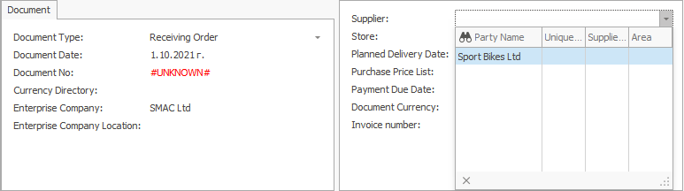

Receiving order
A receiving order document reflects purchases made by a supplier and aims to increase availability.
Most often, it is created as a result of a purchase order.
To create a receiving order, go to Logistics >> Procurement >> Create new receiving order.
Let's fill in the following fields:
- Supplier - this is the supplier from which you plan to buy the goods.

- Store - this is the store in which the goods will be credited.
If the field is left blank, a store can be found for each item in the Receiving order lines panel.
- Document No - here, indicate the number of the purchase order, if available.
Product code - from the dropdown, select the product for purchase.
Product name - if you choose the code, this name is generated automatically.
- Quantity - this is the purchased quantity.

- Measurement unit name- here, indicate the unit of measure for the purchased quantity.

- Unit price - this is the price unit of the purchased quantity.

- Amount to pay - by default, this is a product of the unit price and the quantity.
Other values lead to a recalculation of the unit price.
After filling in the data, release the document.

To view all issued receiving orders, press the Display button.
A list of all receiving orders will appear.
If you click the selected order, you can open and view it.